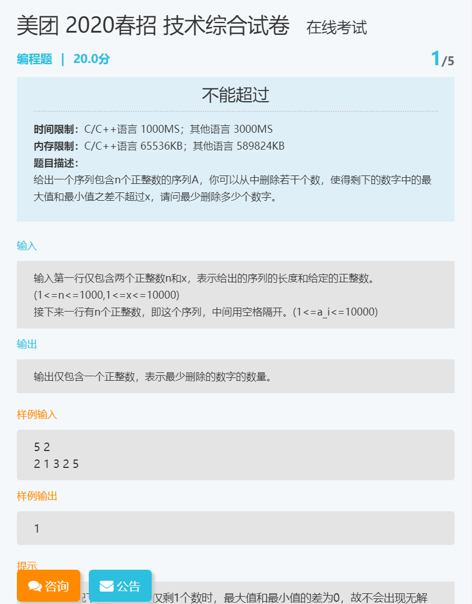

4.2 美团点评笔试记录
本文最后更新于：2020年4月3日 晚上
几天前投了美团点评后端开发工程师的岗位，今晚七点到九点两个小时的笔试。
估计我已经没了😓五个编程题，就做出来无错误提交了一个……
笔试系统用的赛码网 ，可以提前刷点题适应一下。
以下解题思路以及代码只是我自己做的，不保证正确，如果存在错误还请指正！
题目一：最少删除多少个数字

1.1 题目
- 时间限制：C/C++语言 1000MS；其他语言 3000MS
- 内存限制：C/C++语言 65536KB；其他语言 589824KB
题目描述：
给出一个序列包含 n 个正整数的序列 A，你可以从中删除若干个数，使得剩下的数字中的最大值和最小值之差不超过 x ，请问最少删除多少个数字。
输入：
输入第一行仅包含两个正整数n和x，表示给出的序列的长度和给定的正整数。
(1 <= n <= 1000,1 <= x <= 10000)接下来一行有 n 个正整数，即这个序列，中间用空格隔开。
(1 <= a[i] <= 10000)
输出：
输出仅包含一个正整数，表示最少删除的数字的数量。
样例输入
5 2
2 1 3 2 5
样例输出
1提示：
- 极端情况下，当删除到仅剩1个数时，最大值和最小值的差为0，故不会出现无解的情况。
1.2 解题思路
笔试的时候写的有问题，更改过了不知道对不对~
思路：先对数组排序，因为排序后的数组最小最大的数可以直接取到，要尽可能少的删除数字的话，肯定要么删除最大的数，要么删除最小的数，所以我写了一个递归，如果当前传入的有序数组已经满足最大的数与最小的数的差（vec.back() - vec.front()）不超过 x ，那么就结束递归返回 0 ，否则返回 1 + std::min(getMin(vec1, x), getMin(vec2, x)) 。
1.3 代码
#include<iostream>
#include<vector>
#include <algorithm>
//递归算法
int getMin(std::vector<int>& vec, int x) {
if (vec.back() - vec.front() <= x) {
return 0;
}
std::vector<int> vec1;
std::vector<int> vec2;
vec1.assign(vec.begin(), vec.end() - 1);
vec2.assign(vec.begin() + 1, vec.end());
return 1 + std::min(getMin(vec1, x), getMin(vec2, x));
}
int main() {
int n;
int x;
int ans = 0;
std::cin >> n >> x;
if (n == 1) {
std::cout << 0;
return 0;
}
std::vector<int> seq(n);
for (int i = 0; i < n; i++) {
std::cin >> seq[i];
}
//从小到大排序
for (int i = 0; i < n; i++) {
for (int j = 0; j < n - i - 1; j++) {
if (seq[j] > seq[j + 1]) {
int temp = seq[j];
seq[j] = seq[j + 1];
seq[j + 1] = temp;
}
}
}
ans = getMin(seq, x);
std::cout << ans;
return 0;
}题目二：空间回廊

2.1 题目
- 时间限制：C/C++语言 1000MS；其他语言 3000MS
- 内存限制：C/C++语言 65536KB；其他语言 589824KB
题目描述：
有一款叫做空间回廊的游戏，游戏中有着n个房间依次相连，如图，1号房间可以走到2号房间，以此类推，n 号房间可以走到1号房间。
这个游戏的最终目的是为了在这些房间中留下尽可能多的烙印，在每个房间里留下烙印所花费的法力值是不相同的，已知他共有 m 点法力值，这些法力是不可恢复的。
小明刚接触这款游戏，所以只会耿直的玩，所以他的每一个行动都是可以预料的：
- 一开始小明位于1号房间。
- 如果他剩余的法力能在当前的房间中留下一个烙印，那么他就会毫不犹豫的花费法力值。
- 无论是否留下了烙印，下一个时刻他都会进入下一个房间，如果当前位于i房间，则会进入 i+1 房间，如果在 n 号房间则会进入 1 号房间。
- 当重复经过某一个房间时，可以再次留下烙印。
很显然，这个游戏是会终止的，即剩余的法力值不能在任何房间留下烙印的时候，游戏终止。请问他共能留下多少个烙印。
输入：
输入第一行有两个正整数 n 和 m ，分别代表房间数量和小明拥有的法力值。(1 <= n <= 100000,1 <= m <= 10^18)
输入第二行有 n 个正整数，分别代表1~n号房间留下烙印的法力值花费。(1 <= a[i] <= 10^9)
输出：
输出仅包含一个整数，即最多能留下的烙印。
样例输入
4 21
2 1 4 3
样例输出
9
样例解释：
显然是所有房间都留下两个烙印，然后剩下1点法力值，仅能在2号房间再留下一个烙印.2.2 解题思路
这题挺像约瑟夫环问题的，所以思路倒是很好想到，只要循环遍历数组，如果剩下的法力值不少于当前房间要消耗的法力值，就减掉当前房间要消耗的法力值，同时烙印数+1。
跳出循环的条件是，没有足够的法力值可以消耗了，也就是剩下的法力值都不够在消耗法力最少的房间花费了。所以在传入数组的时候就定义了一个 min 用以保存最少需要花费的法力，只要剩下的法力小于 min 就可以跳出循环。
2.3 代码
#include<iostream>
#include<vector>
int main() {
int n;//房间数
int m;//法力值
int ans = 0;
std::cin >> n >> m;
std::vector<int> room(n);
int min = -1;
for (int i = 0; i < n; i++) {
std::cin >> room[i];
if (min == -1) min = room[i];
min = min < room[i] ? min : room[i];
}
int i = 0;
while (m >= min)
{
if (m >= room[i]) {
m -= room[i];
ans++;
}
i++;
if (i == n) i = 0;
}
std::cout << ans;
return 0;
}题目三：小仓的射击练习4
3.1 题目
- 时间限制：C/C++语言 1000MS；其他语言 3000MS
- 内存限制：C/C++语言 65536KB；其他语言 589824KB
题目描述：
小仓酷爱射击运动。今天的小仓想挑战自我。小仓有 N 颗子弹，接下来小仓每次会自由选择 K 颗子弹进行连续射击，全中靶心的概率为 p[k] 。如果成功小仓将获得 a[k] 的得分，并且可以使用余下子弹继续射击，否则今天的挑战结束。小仓想知道在最佳策略下，自己能得到的最高期望分数是多少。
输入：
- 第一行一个数N，代表子弹数量。
- 第二行N个数p[]，第 i 个数代表p[i]。
- 第三行N个数a[]，第 i 个数代表a[i]。
- 1<=N<=5000 0<=p[i]<=1 0<=a[i]<=1000
输出：
- 一个数表示最高期望得分，保留两位小数。
示例1：
样例输入
2
0.80 0.50
1 2
样例输出
1.44
样例1解释
选择用一颗子弹射击：如果命中则再用余下子弹射击（仅剩一颗子弹故只能选择一颗）：0.80 * 1 + 0.80 * 0.80 * 1= 1.44
选择用两颗子弹射击：0.5 * 2 = 1.00
此时最高期望得分为1.44示例2：
输入样例2
3
0.90 0.10 0.10
2 1 1
输出样例2
4.88
选择用一颗子弹射击：如果命中则再用一颗子弹进行射击，如果命中则再用一颗子弹进行射击（即3轮均使用了一颗子弹进行）：0.90 * 2 + 0.90 * 0.90 * 2+0.90 * 0.90 * 0.90 * 2= 4.878≈4.88 此种情况的期望得分最高，故为4.883.2 解题思路
绝了，概率也不行，动态规划也不行……
3.3 代码
题目四：拆分

4.1 题目
- 时间限制：C/C++语言 1000MS；其他语言 3000MS
- 内存限制：C/C++语言 65536KB；其他语言 589824KB
题目描述：
给定长度为n的串S，仅包含小写字母。定义：
公式中，|A|代表字符串A的长度。
也就是说如果子串是一个 ABA 型的字符串，且满足长度限制，则f(l,r)=1，否则等于0。（注意：形如 “ababab” 也可视为 ABA 型）
例如当n=2时，原式为 f(1,1)+f(1,2)+f(2,2) 。
输入：
- 第一行一个字符串S
- 第二行一个数字k
输出：
- 输出题目描述中式子的值
示例：
样例输入
abcabcabc
2
样例输出
8提示
1 <= n <= 2000，S[i]为小写字母
样例解释：
在这个字符串中，有 f(1,5),f(1,8),f(1,9),f(2,6),f(2,9),f(3,7),f(4,8),f(5,9) 的值为 1，其他为 0 ，故和为 8 。以 f(1,5) 为例，选择的子串是 abcab，令 A=“ab” ，B=“c” ，则 |A|>=k 且 |B|>=1 ，因此 f(1,5) 等于 1 ，以此类推。
4.2 解题思路
4.3 代码
题目五：max xor min

5.1 题目
- 时间限制：C/C++语言 1000MS；其他语言 3000MS
- 内存限制：C/C++语言 65536KB；其他语言 589824KB
题目描述：
给你一个长度为n的序列 a，请你求出对每一个 1<=l<r<=n 的区间中最大值和最小值的异或和的异或和。
例如序列为 {1,3,5} ,不同的 a(1,2)=1^3,a(1,3)=1^5,a(2,3)=(3^5),a(1,2)^a(1,3)^a(2,3)=0 ，所以最后的答案是 0 。
输入：
- 输入第一行仅包含一个正整数n，表示序列的长度。
(1<=n<=10^5) - 接下来一行有n个正整数a_i，表示序列a。
(1<=a_i<=10^9)
输出：
- 输出仅包含一个整数表示所求的答案。
样例输入
3
1 3 5
样例输出
05.2 解题思路
5.3 代码
本博客所有文章除特别声明外，均采用 CC BY-SA 4.0 协议 ，转载请注明出处！